1. Does it look like a person made it?
“The Mixer knew my calendar, not my heart. My photos, my letters and the story chapters were missing.”
Photos, letters and chapters are back on every page.
SHOWS WITH FRIENDS · EDITION 2 · PREVIEW
You asked for 100 changes, then 10 more from a critique in your own voice. There are 112, grouped below. The live page stays as it is until you say swap.
Truth 12 · The home page 30 · Every night page 25 · Portola Saturday 3 · Every friend page 13 · The path to LA28 7 · Craft 16 · Joy 6
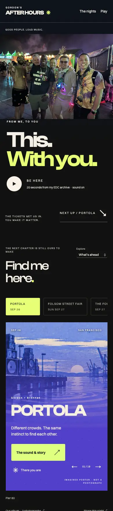
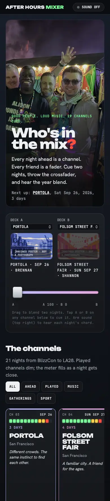
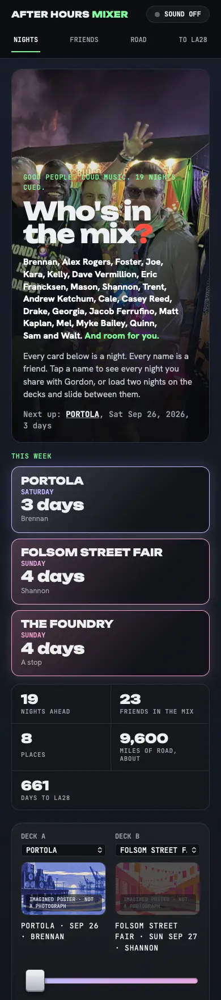
Your seven rubric questions, asked of the Mixer. Each one led to fixes on this list.
1. Does it look like a person made it?
“The Mixer knew my calendar, not my heart. My photos, my letters and the story chapters were missing.”
Photos, letters and chapters are back on every page.
2. Who has the mic?
“The nights shouted and my friends whispered, as 19 identical grey boxes.”
The hero names every friend. Friend cards show their nights in color and when you'll see each other next.
3. What time of day is this room?
“Every page was a booth at 1 AM.”
Each night gets its own light: daylight for Folsom and LA28, golden hour for Portola, dawn for EDC.
4. Did the click pay me?
“Tapping Brennan got me a grey 'B' and two tall empty cards.”
Light up a friend and their nights glow. Open a night and you earn its wristband.
5. Will it work for the person I send it to?
“Kelly doesn't know what 'CH 07' or 'arm sound' means.”
Plain words throughout, plus a calendar button, directions and an 'I'm in' text on every night.
6. Did you teach me something?
“Tell me who I spend the most nights with, and how far we'll go.”
It shows who shares the most nights with you, plus a road map covering about 9,600 miles and the next photo anniversary.
7. Did you tell me the truth?
“The Farmily was missing, and BlizzCon said 'played' as if the date proved I went.”
The Farmily is counted, Foster is marked a maybe, and past dates make no claim about who went.
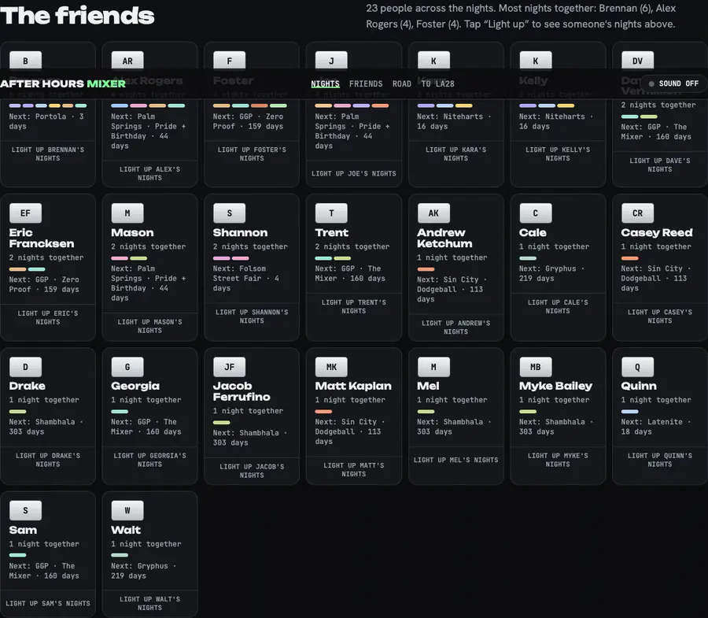
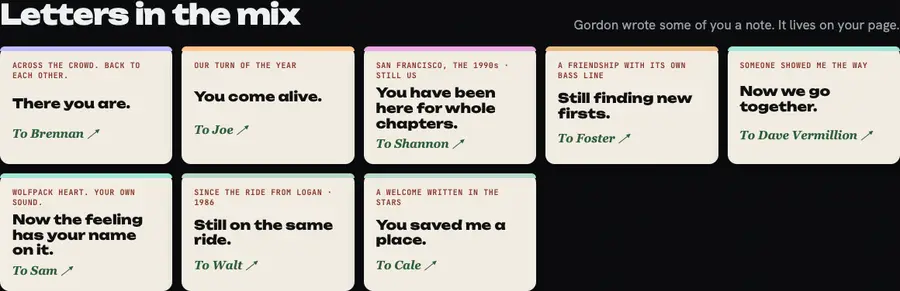
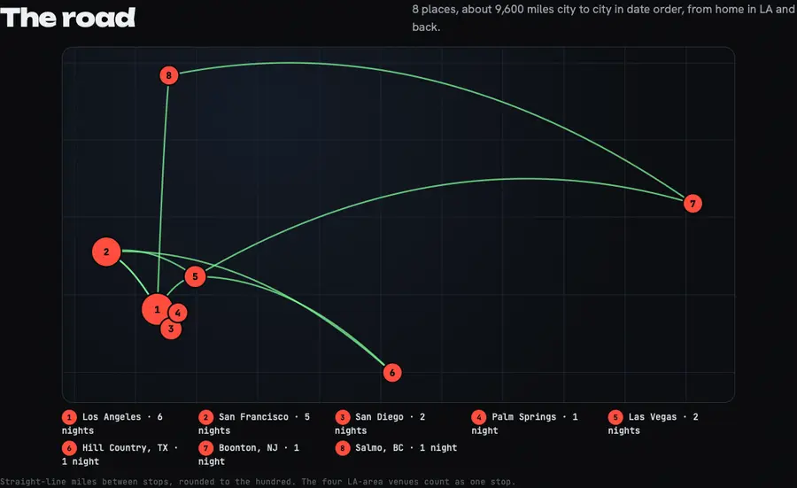
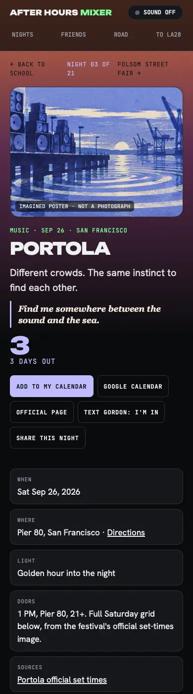
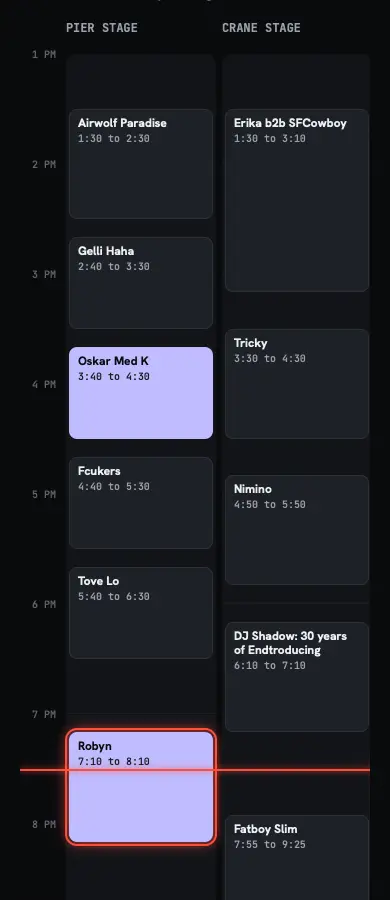
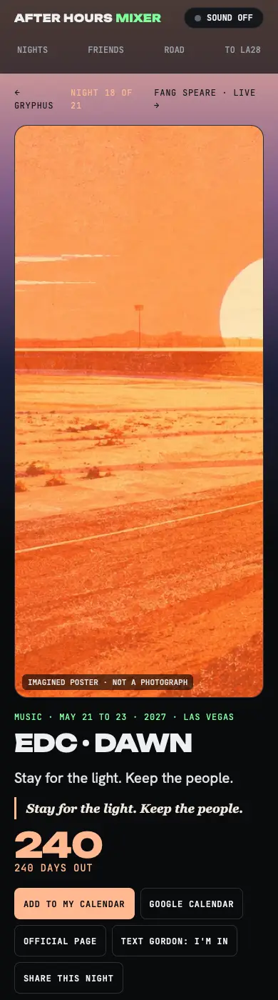
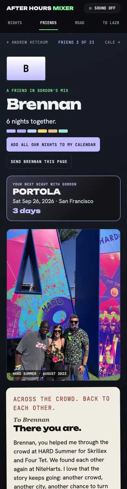
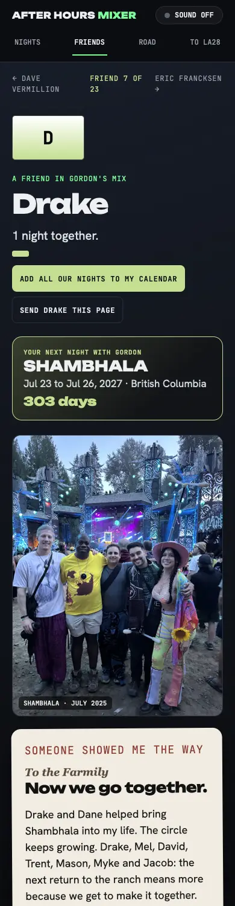
Still open: Astra's independent check of every date and name hasn't come back yet. Portola's set times, LA28 and the F1 time are verified. The other dates carry over from the live page.